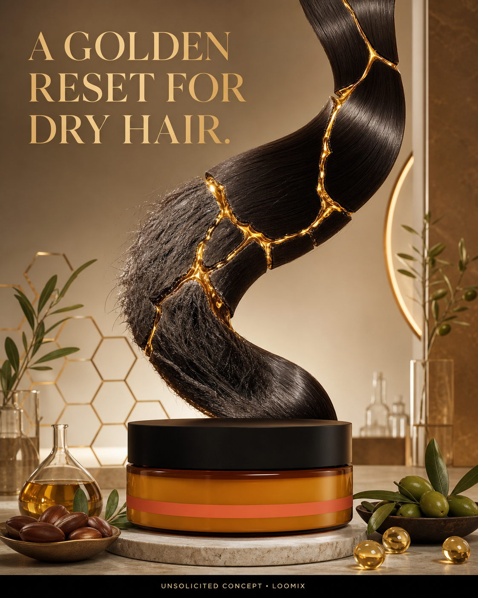

Concept created by LoomixUnsolicited concept
tginReels + TikTok9:168 seconds
Honey Miracle Hair Mask — A Golden Reset for Dry Hair
A dry, fragile hair ribbon appears like a broken work of art. Warm honey-gold treatment fills the gaps in a kintsugi-inspired pattern, reconnecting the strand as it becomes soft, moisturized, manageable, and glossy.
Create with LoomixView official product
Hook options
“A golden reset for dry hair.”
“Pour softness into every strand.”
“Honey care, restored shine.”
8-second storyboard
Open on a dry strand displayed like cracked art.
Reveal the amber Honey Miracle mask jar.
Pour warm honey-gold treatment into each gap.
Add jojoba, olive, and Vitamin E cues.
Reconnect the strand into soft, glossy movement.
End on the jar, golden strand, hook, and CTA.
Caption direction
A refined golden-restoration metaphor that turns raw honey and nourishing oils into one instantly readable transformation for dry, stressed strands.
Made for rapid testing
Loomix turns one product image into a storyboard, short-video direction, captions, and ready-to-post ad copy.
This is an unsolicited creative concept made by Loomix for demonstration purposes. Loomix is not affiliated with or endorsed by tgin.